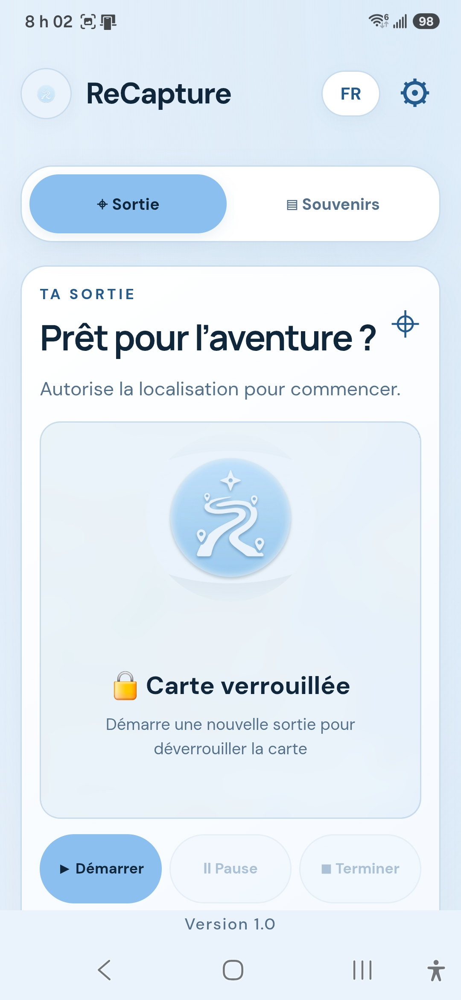

🥾
Randonnée & exploration
Suivez votre parcours et conservez les paysages et les découvertes en chemin.
Chaque sortie devient un souvenir. ReCapture réunit votre trajet, vos photos, vos vidéos et votre musique, peu importe votre façon d’explorer.

À pied, sur deux roues ou sur l’eau, gardez une trace de ce que vous avez vécu et retrouvez les moments forts de votre sortie.
Suivez votre parcours et conservez les paysages et les découvertes en chemin.
Revivez vos routes, vos arrêts et les beaux panoramas de vos sorties.
Gardez la trace de vos randonnées à vélo et de vos sorties quotidiennes.
Immortalisez vos explorations en gyroroue et autres moyens de mobilité personnelle.
Conservez le souvenir de vos sorties sur les lacs et les rivières.
Un compagnon de souvenirs pour de nombreuses activités de plein air et véhicules récréatifs.
Carte et trajet · Photos et vidéos · Souvenirs à revoir · Ambiance musicale. Les fonctions présentées sont en développement.
Quelques aperçus de l’interface actuelle. Cliquez sur une image pour l’agrandir.
Découvre les applications GyroRider Horn et GyroRider Speed, présentées ici avec le même format.
Une application de klaxon personnalisable pour gyroroue et autres véhicules. Choisis tes sons, utilise les commandes adaptées et profite d’une expérience simple, gratuite et pratique.
Un compagnon de trajet fonctionnel pour les utilisateurs de gyroroue électrique (EUC), de vélo électrique et de mobilité légère. Consulte la vitesse GPS, suis tes trajets et personnalise tes réglages.
Un projet expérimental qui explore une interface multimédia pour Android Auto, avec les listes IPTV personnelles de l’utilisateur. La compatibilité et les limites de sécurité restent au cœur des essais.